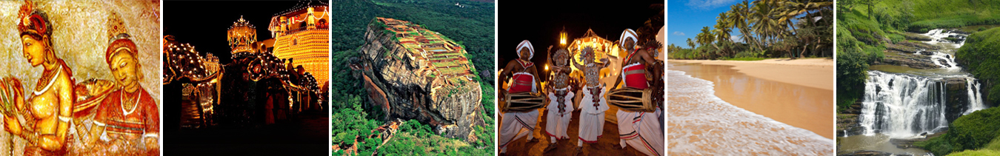

Family Package
JIn order to glimpse some of the exquisite locations of Sri Lanka, we have put together a round trip, where you will get a chance to see this island like no other. Visit the cultural side, the golden sandy beaches, experience the thrills of wildlife safari, breathtaking views of the hill country and its rich heritage that will leave you wanting for more.
Day 1
Welcome and assistance at the airport and transfer, approximate 01 hour drive to the hotel in Waikkal. If time permits visit the fishing village in Negombo which is the center of the island’s fishing community. It is largely Roman Catholic by faith, with huge imposing churches down almost every street. The sea and the catamarans are the backdrop to the Negombo scenery. Another point of interest in Negombo is the Old Dutch Fort, which was built in 1672. It is situated near the shore and offers a glimpse into the colonization history of Negombo. Relax at the beach and over night stay at the hotel.
Day 2
Leave as early as possible for Anuradhapura, approximate 3 hour drive from Waikkal. Visit the ruins of the first capital found in the 05th century BC, the largest number of ancient monuments of a great civilization. The 'Sri Maha Bodhi Tree' in Anuradhapura, planted from a cutting from the original 'Bo Tree' under which the Buddha received enlightenment, continue to draw thousands of Buddhist pilgrims from around the world. The pillars of the brazen palace which once had nine stories, the image of the Samadhi Buddha which is one of the finest pieces of Buddhists sculpture, the twin ponds, guard-stones and the moon-stones are amazing remains of a great civilization. There are also monuments such as Ruwanveli Seya Dagoba with its famous elephant wall from the 2nd Century B.C. and the Thuparama Dagoba from the 3rd Century B.C. Check into hotel for overnight stay.
Day 3
Drive to Trincomalee, 2 hours from Anuradhapura, Trinco, as it is commonly called, has been a sea port since the days of the ancient Kings and one of the British Empire's most important ports in Asia during the second world war. From 1941-45, Trinco had been the headquarters of Lord Louis Mountbatten Allied Southeast Asia commander. Also Trinco is a natural deep water harbor that attracted great sea farers like Marco Polo, Ptolemy and sea traders from East Asia from ancient times. Nilaweli and Uppuveli 16 km and 6 km north of the city respectively are among the best beaches in Sri Lanka. Knee deep shallow seas spreads out hundreds of meters towards the sea making this an ideal place for sun bathing, snorkeling, surfing and whale watching. 2 nights in Trincomalee.
Day 4
Day at leisure

Day 5
Leave early, approximate 3.5 hour drive to Dambulla, visit the Cave Temple, a vast isolated rock mass and it was here that king 'Valagambah' took refuge in the 01st century B.C. He later turned the caves into a rock temple. Dambulla is a world heritage site and is the most impressive of Sri Lanka’s cave temples. The complex of five caves with over 2000 sq. meters of painted walls and ceiling found here are over 2000 years old and is the largest area of painting found in the world. The caves contain over 150 images of the Buddha of which the largest is the colossal figure of the Buddha carved out of rock and spanning 14 meters. Go for a game drive, 40 minutes Minneriya National Park, located between Habarana and Polonnaruwa is the 8890 hectares of Minneriya National Park which is an ideal eco tourism location in Sri Lanka. The park consists of mixed ever green forest and scrub areas and is home to Sri Lanka's favorites such as Sambar Deer, Leopards and Elephants. However the central feature of the park is the ancient Minneriya Tank (built in 3rd century AD by King 'Mahasen'). This tank is generally known as a place to observe the Elephants who come to bathe and graze on the grasses as well as the huge flocks of birds (cormorants and painted storks to name but a few) that come to fish in the shallow waters.
Day 6
Proceed to climb the Sigiriya Rock Fortress which is known as the 8th wonder of the world. This rock fortress was built by King Kasyapa in the 5th century A.D. and was a royal citadel for more than 18 years. In a sheltered a pocket, approached by a spiral stairway, are the famous frescoes. The summit of the rock, with an area of nearly one hectare was the site of the palace and the outer wall was built on the very brink of the precipice. The UNESCO sponsored Central Cultural Fund has restored Sigiriya 5th century water gardens to their former glory. Enjoy a tuktuk ride, a bullock cart ride, authentic meal and feel true Sri Lanka. Overnight at the hotel.
Day 7
Leave early to make it for the feeding time, Pinnawela Elephant Orphanage, (approximate 2.5 hour drive from your overnight hotel) the home of orphaned elephants. The Pinnawela Elephant Orphanage established in 1975, commenced with seven orphans. Today some of these orphans enjoy the fortune of seeing their grand children born in the same location. Success story of Pinnawela has drawn the attention of scientists from all over the world. The members of the Pinnawela herd have been filmed, videoed and photographed thousands of times by professionals. Leave for Kandy, one hour drive, visit Temple of the Tooth Relic, it is located in the royal palace complex which houses the Relic of the tooth of Buddha. Since ancient times, the relic has played an important role in local politics because it is believed that whoever holds the relic holds the governance of the country. Kandy was the last capital of the Sinhalese kings and is a UNESCO world heritage site partly due to the temple. Watch a cultural show. These classical dance forms are associated with the performance of various rituals and ceremonies which are centuries old and are based on the folk religion and folk beliefs going back to times before the advent and acceptance of Buddhism by the Sinhalese people in the third century B.C. These rituals and ceremonies reflect the values, beliefs and customs of an agricultural civilization of Sri Lanka. Check into hotel.
Day 8
Check out from hotel and visit Peradeniya Botanical Garden After breakfast at the hotel visit The Royal Botanic Gardens at ‘Peradeniya’ where you could treat your eyes to an amazing, wide and rare collection of tropical and temperate, exotic and indigenous flora, and an orchid house with the largest collection in Asia. Start your journey to see the Littile England. NuwaraEliya is set in the heart of tea-country is a beautiful town where the British succeeded in creating a replica of the English countryside, with homes in styles from Georgian to Queen Anne. Well-kept lawns with hedges, an Anglican church, a famous golf course and beautiful parks give the place an air of nostalgia. Situated 6,200 feet above sea level, the air is cool and fresh – a serene retreat from the hustle and bustle of the city life. Pony and Horse riding is available at the turf club of Nuwaraeliya to facilitate you with some sports and adventure. Check into hotel.
Day 9
Leave as early as possible to go to Ella, approximate 1.5 hour drive, Ella is blessed with some of the most beautiful views, you could find in Sri Lanka. This small town is used as a base for plenty of trekking expeditions to the surrounding countryside. A taste of the breathtaking scenery of Ella could be had, if you just walk into the Garden of the Grand Ella Motel (Formerly Ella Rest House), where you seem to be standing at the edge of the world, and everything around you seems to disappear at your feet. Enjoy the beauty and check into hotel. Relax at the hotel.
Day 10
Leave Ella and leave for Galle, 4 hour drive from Ella. Galle is a coastal town where the Dutch presence is still visible. Galle was an ancient port (said to be the legendary Tarshish of the Bible), and our first international commerce and trade centre. Today, Galle is the bustling provincial capital and administrative centre of the south. It is famous for its lovely Unawatuna Bay, where the sea is reef protected and therefore safe for swimming. The old Dutch “Star Fort” (a World Heritages Site) covering 36 hectares, the well-preserved Groote Kerk (Dutch Church), Dutch Government House, the New Oriental Hotel (built in 1684) old bell tower and a tide-based Sewage-System, also introduced by the Dutch. In Galle they still make the Dutch ‘Pillow-Lace’ and do fine ebony carving and gem polishing. Stay in Galle
Day 11
Check out from hotel and leave for Waikkal, en route visit a turtle hatchery, 1 hour drive from Galle. They are the Green Turtle, the Leatherback, the Hawksbill the Loggerhead and the Olive Ridley. All 5 species have been recorded to nest along specific areas of Sri Lanka’s coast. Studies have indicated that beaches can be categorized in accordance with visitation by different species of turtles. Leave for Colombo, 2 hour drive is known as the commercial capital of Sri Lanka. During your journey through the City of Colombo, you will visit the Bandaranaike Memorial International Conference Hall (BMICH) which is the very first purpose built convention center in Asia that combines the best of professional conference facilities available. The Independence Square, is also a must visit, which today has become a major tourist attraction due to its historical significance and extraordinary work of architecture. Your visit will see the Old Parliament of Sri Lanka and the gorgeous Galle Face Green facing the beautiful Indian Ocean. If time permits, you would be given the opportunity to shop at the famous department stores and malls in Colombo where you would finds brands such as Marks and Spencer, Victoria’s Secret, GAP ect.. at bargain prices.